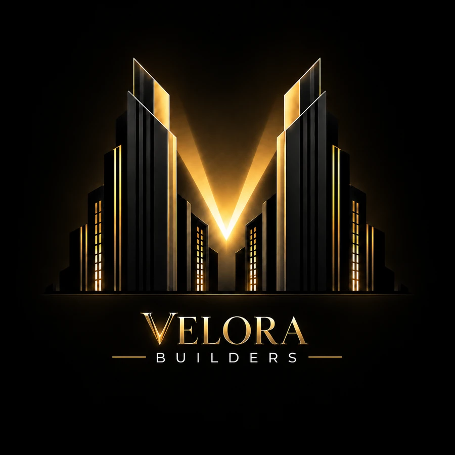

Kitchen Remodeling
Cabinetry, counters, flooring, lighting, layout improvements and complete kitchen transformations.


BAY AREA · RESIDENTIAL CONSTRUCTION
From full remodels and additions to repairs and smaller improvements, Velora Builders is ready to take the call. Big or small, every project gets real attention, clear communication and a professional finish.
WHEN THE CALL GOES OUT
Velora Builders is built around a simple standard: show up, communicate clearly and deliver work that feels intentional. We coordinate the moving parts so your project feels organized instead of overwhelming.
No job is too small to matter and no project is too large to deserve careful planning. From a focused repair or bathroom upgrade to a full remodel, addition or multi-trade project, we bring the same level of care to every scope.
Send the signal for a free estimate ↗WHAT WE BUILD
One dependable team for projects of every size — from targeted repairs and improvements to full-scale renovations, additions and exterior work.
Cabinetry, counters, flooring, lighting, layout improvements and complete kitchen transformations.
Tile, waterproofing, showers, vanities, fixtures and complete bathroom renovations.
Driveways, patios, walkways, grading, demolition, flatwork and exterior upgrades.
Expanded living space, conversions, framing, structural improvements and coordinated buildouts.
Inspection repairs, water-damage corrections, finish work, punch-list items and smaller construction projects.
Multi-trade coordination for larger projects that need one accountable team overseeing the work from start to finish.
THE V IN THE SKY
Need a repair, remodel, addition or complete transformation? Send the call. We are ready to look at projects big or small and provide a free estimate with a clear path forward.
Send the SignalFEATURED PROJECTS
Explore a selection of Velora Builders projects across kitchens, bathrooms, exterior spaces, framing and residential improvements. Every project reflects the same focus on detail, execution and finish.


CLIENT EXPERIENCE
Professional work deserves a professional process.
We focus on clear expectations, respect for your property, dependable communication and work you can feel confident recommending.
Your feedback helps future clients understand what it is like to build with Velora. We appreciate every client who trusts us with their home.
Leave a ReviewSEND THE SIGNAL
Tell us what you are planning, where the project is located and the best way to reach you. From smaller repairs to complete remodels, additions and full-scope construction, we welcome the opportunity to take a look.